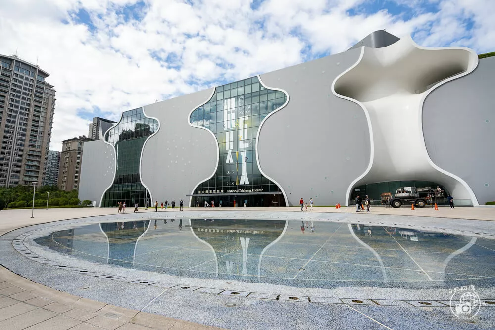

探索台中
從城市建築到自然風景，帶你認識台中的特色景點。

台中國家歌劇院
欣賞獨特的建築設計，感受藝術與文化的魅力。
查看更多
景點簡介
臺中國家歌劇院位於台中市西屯區，以特殊的曲牆建築設計聞名，是結合建築藝術與表演藝術的文化場館。館內設有不同規模的劇場，也有公共藝術及展覽空間，適合喜歡建築、藝術與文化的遊客。
景點地址
台中市西屯區惠來路二段101號
交通資訊
公車：可搭乘行經臺中國家歌劇院或市政府附近的公車，再步行前往。
捷運：搭乘台中捷運綠線至市政府站，再步行或轉乘公車。
自行開車：可利用附近停車場，停車資訊依現場公告為準。
推薦活動
欣賞特色建築、參觀公共藝術、在周邊散步，也可以事先查詢表演節目，安排一場藝術之旅。
旅遊小提醒
建議預留1至2小時參觀。若想欣賞表演，請提前確認演出時間及購票資訊。
臺中州廳
走訪歷史建築，認識台中的城市故事。
查看更多
景點簡介
臺中州廳是台中市具有代表性的歷史建築，建築外觀具有近代西洋官署建築的特色，整體風格莊重典雅。透過建築的設計與歷史背景，可以認識台中過去的行政發展與城市變遷，也是了解地方文化的好去處。
景點地址
台中市西區民權路99號
交通資訊
公車：可搭乘行經臺中州廳附近的市區公車，下車後步行前往。
火車：可從臺中車站轉乘公車或步行前往，實際時間依路線而異。
自行開車：可使用周邊停車場，再步行抵達。
推薦活動
欣賞歷史建築、觀察建築外觀與裝飾細節，並搭配附近的歷史街區安排散步行程。
旅遊小提醒
建議預留1至2小時。建築內部及展覽空間的開放範圍可能有所不同，出發前請確認最新開放公告。
審計新村
逛逛文創小店，享受悠閒的散步時光。
查看更多
景點簡介
審計新村原本是員工宿舍，經過活化後成為結合老建築、文創商店與青年創業的特色園區。園區內有手作商品、生活用品、甜點及飲品等店家，保留老房子的特色，也加入了許多新創意，是適合散步、拍照和探索特色小店的地方。
景點地址
台中市西區民生路368巷
交通資訊
公車：可搭乘行經民生路、向上路或附近地區的市區公車，再步行前往。
火車：從臺中車站轉乘前往西區的市區公車，再步行抵達。
自行開車：可停放於周邊合法停車場，再步行進入園區。
推薦活動
逛文創小店、購買手作商品、品嚐甜點與飲品、拍攝特色建築，也可以搭配草悟道及國立臺灣美術館安排半日遊。
旅遊小提醒
建議停留1.5至2.5小時。各店家的營業時間不同，假日也可能較多人，出發前可以先確認想逛的店家是否營業。
高美濕地
欣賞海岸風景與夕陽，感受大自然的美好。
查看更多
景點簡介
高美濕地位於台中市清水區，是具有豐富自然生態的海岸濕地。這裡有泥灘、濕地植物與多種鳥類，適合觀察生態及欣賞海岸風景。天氣晴朗時，遼闊的天空與夕陽景色也十分迷人，是台中知名的自然景點。
景點地址
台中市清水區美堤街附近
交通資訊
火車：搭乘台鐵至清水車站，再轉乘前往高美濕地方向的公車。
公車：可搭乘前往高美濕地周邊的公車，出發前請確認當日班次。
自行開車：可依導航前往周邊停車場，再步行至觀景區。
推薦活動
沿著木棧道欣賞濕地景觀、觀察鳥類與潮間帶生態、拍攝夕陽，也可以在附近的海岸自行車道欣賞風景。
旅遊小提醒
建議預留2至3小時。木棧道可能受到潮汐與安全因素影響而調整開放時間，出發前應查詢當日公告。海邊風勢可能較強，請留意天氣並遵守生態保護規定。